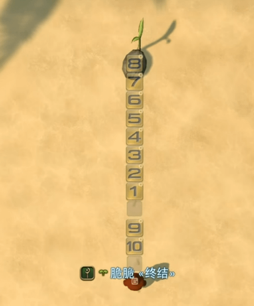
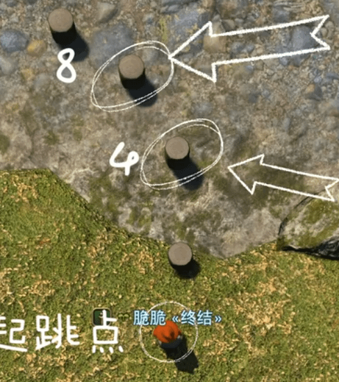
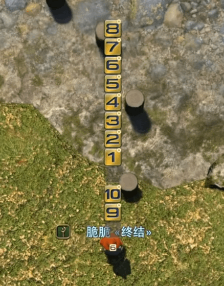

Jump Puzzle Macros
A macro-and-hotbar trick for jumping exact, repeatable distances, useful for precision jumping puzzles.
How it works
The idea: turn your hotbar into a ruler. A macro that holds /automove for a fixed number of frames before triggering /gaction Jump produces a jump of a very consistent, specific distance, as long as your frame rate is locked. Build one macro per distance, calibrate them once against a fixed landmark, and afterward you can read off exactly which number to press for any given gap.
Video not loading? Watch it directly on bilibili instead; the CDN can be slow outside mainland China.
Step 1: resolution
Set your game to 4K at 60 FPS, and UI size to 200%. If you don't have a 4K monitor, use the highest resolution available and adjust the UI size proportionally during calibration. It has to be 60 FPS, or the timing won't line up.
Step 2: macros
Create macros 1–10 below (icon numbers optional, just for readability) exactly as written. Each one holds auto-move for a different number of frames before jumping, which is what produces a different, repeatable distance per macro.
Step 3: hotbar
Make a blank 1×12 hotbar and place it low on screen, in front of your character, with the camera pointed straight down. After calibration you'll be able to look at this bar and click whichever number matches the distance you need.

Step 4: calibration
Go to New Gridania (X: 9.8, Y: 12.5) and find the row of wooden stakes there. Stand on the bottom-right stake and adjust your hotbar's position and your camera depth (scroll in/out) until the number 8 lines up over the 4th stake and the number 4 lines up over the 3rd stake. If the hotbar doesn't fit the screen well, try 150% or 100% UI size instead and recheck the alignment. Nudge the camera depth in small steps until the fit is exact.

Once it's aligned, it should look something like this:

Using it
Whatever number lines up with your target distance is the macro to press. Remember your camera depth (how many scroll steps up or down you used), since the calibration only holds at that specific zoom level.
And yes, this does take some of the fun out of jumping puzzles, so skip it if you'd rather just eyeball the jumps.